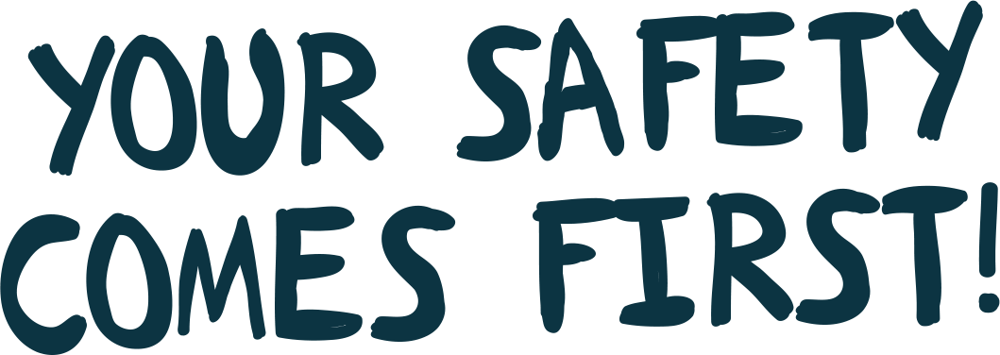

<!DOCTYPE html>
<html lang="en">
<head>
    <meta charset="UTF-8">
    <title>#2minutebeachclean | Safety</title>
    <link rel="stylesheet" href="libs/bootstrap/dist/css/bootstrap.min.css">
    <link href='https://fonts.googleapis.com/css?family=Open+Sans:400,300,600,700,800' rel='stylesheet' type='text/css'>
    <link href='https://fonts.googleapis.com/css?family=Open+Sans+Condensed:300' rel='stylesheet' type='text/css'>
    <link rel="stylesheet" href="css/styles.css">
    <script src="libs/jquery/dist/jquery.min.js"></script>
    <script src="libs/bootstrap/dist/js/bootstrap.js"></script>

</head>
<body>

<header>

    <div class="content">

        <a href="home.html"></a>
        <nav class="main">
            <ul class="menu" style="border: 0px solid green">
                <li><a class="horiz" href="home.html">Home</a></li>
                <li>
                    <a class="horiz selected" href="why.html">Why?</a>
                    <ul style="margin-left: -37px;">
                        <li class="spacer">&nbsp;</li>
                        <li class="selected-arrow">&#9650;</li>
                        <li class="vert-header">Why?</li>
                        <li><a href="safety.html">Safety</a></li>
                    </ul>
                </li>
                <li><a class="horiz" href="about.html">About</a>
                    <ul style="margin-left: -30px;">
                        <li class="spacer">&nbsp;</li>
                        <li class="selected-arrow">&#9650;</li>
                        <li class="vert-header">About</li>
                        <!--<li><a href="sponsors.html">Sponsors</a></li>-->
                        <li><a href="about.html">About us</a></li>
                        <li><a href="videos.html">Videos</a></li>
                        <!--<li><a href="media.html">Media</a></li>-->
                    </ul>
                </li>
                <li>
                    <a class="horiz" href="boards.html">Boards</a>
                    <ul style="margin-left: -30px;">
                        <li class="spacer">&nbsp;</li>
                        <li class="selected-arrow">&#9650;</li>
                        <li class="vert-header">Boards</li>
                        <li><a href="boardsmap.html">Map</a></li>
                        <li><a href="boards.html">Info</a></li>
                    </ul>
                </li>
                <!--<li><a class="horiz" href="blog.html">Blog</a></li>-->
                <li><a class="horiz" href="global.html">Global</a></li>
                <!--<li><a class="horiz" href="shop.html">Shop</a></li>-->
            </ul>
        </nav>

        <nav class="mobile">

            <div class="dropdown">
                <button class="btn btn-default dropdown-toggle" type="button" id="dropdownMenu1" data-toggle="dropdown" aria-haspopup="true" aria-expanded="true">
                    <i class="glyphicon glyphicon-menu-hamburger"></i>
                </button>
                <ul class="dropdown-menu dropdown-menu-right" aria-labelledby="dropdownMenu1">
                    <li><a href="home.html">Home</a></li>
                    <li>
                        <a href="why.html">Why?</a></li>
                    <li><a href="safety.html">Safety</a></li>
                    </li>
                    <li><a href="about.html">About</a>
                        <ul >
                            <!--<li><a href="sponsors.html">Sponsors</a></li>-->
                            <li><a href="about.html">About us</a></li>
                            <li><a href="videos.html">Videos</a></li>
                            <!--<li><a href="media.html">Media</a></li>-->
                        </ul>
                    </li>
                    <li>
                        <a  href="boards.html">Boards</a>
                        <ul>
                            <li><a href="boardsmap.html">Map</a></li>
                            <li><a href="boards.html">Info</a></li>
                        </ul>
                    </li>
                    <!--<li><a class="horiz" href="blog.html">Blog</a></li>-->
                    <li><a href="global.html">Global</a></li>
                </ul>
            </div>

        </nav>

    </div>

</header>

<div class="body-container">

    <main class="safety">

        <section class="header">

            <div class="text-area">
                
                <p>How to stay safe on your #2minutebeachclean</p>


            </div>
        </section>

        <section class="intro">

            <div class="text-container">
                <h1>Looking after number one</h1>

                <p>This is the small print. It’s the bit where we tell you all the boring stuff that you need to remember when you are out on your 2 minute beach clean. Even though you don’t need insurance or risk assessments or any kind of paperwork to do your bit, you must stay safe at all costs. Your safety is the most important thing. </p>
                <p>Please also remember that you are on the beach at your own risk so, whatever you do, don’t take unnecessary risks. The following is a guide to help you to stay safe.</p>
            </div>

        </section>

        <section class="body">

            <div class="content">

                <h1>Why plastic doesn’t belong in the marine environment</h1>

                <ul>

                    <li>Make sure someone knows where you are going and what time you plan to be back.</li>

                    <li>Be aware of the tide and don’t allow yourself to get cut off. Always plan an escape route if you are under cliffs.</li>
                    <li>If you can, wear protective gloves or use a litter picker. If you can’t, wash your hands afterwards.</li>

                    <li>Supervise your children and make sure they don’t pick up sharps or poo or dead things.</li>

                    <li>Do not pick up needles or glass or any other sharps unless you have somewhere safe to put them. Old or used needles MUST be handled carefully and disposed of properly. Ask your local surgery.
                    </li>

                    <li>Do not pick up anything organic that is not beach litter. We’re talking dead animals or birds and poo. Leave it be. If it is a sea bird or marine mammal, report it.
                        In the UK report it to The Marine Strandings Network on 03452012626. <a
                                href="http://www.ukstrandings.org" target="_blank">www.ukstrandings.org</a> </li>

                    <li>If you find a marine mammal (dolphin, seal etc) please report it.
                        This is very important if the animal is still alive. Putting them back in the sea can be a risk, especially if young.
                        In the UK report it to The British Divers Marine Life Rescue on their RESCUE HOTLINE: 01825 765546 during office hours. (07787 433412 out of office hours.
                        <a href="http://www.bdmlr.org.uk" target="_blank">www.bdmlr.org.uk</a> </li>

                    <li>If you find ordnance (old shells or bullets) call the Coastguard. <br>
                        In the UK this is on 999.</li>

                    <li>If you find what you suspect to be dangerous chemicals or substances, leave them alone and call the Coastguard.
                    </li>

                    <li>Dress properly for the weather and conditions.</li>
                    <li>Be careful under overhanging cliffs or below unstable areas and be VERY wary of landslips and cliff falls, especially after heavy rain.</li>

                    <li>Be careful over wet rocks. Walk on the barnacles as they give better grip.</li>

                    <li>If you find anything of value that is technically salvage, you must report it to the Receiver of the Wreck (this is UK only – local rules may apply).</li>


                    <li>Please dispose of your finds properly. Some plastics may be recycled. Please check locally what can and can’t be recycled. </li>


                </ul>

                <p>Ready? Great. Go and do your #2minutebeachclean with our blessing and grateful thanks. </p>
                <p>Just take care and be sensible. </p>
                <p>Beach cleaning is a wonderful, healthy and often fun activity. And it’s doing  something great for your local environment. </p>
                <p>Every bottle removed from the beach is a bottle that won’t end up in the food chain, killing a marine animal or polluting the ocean.</p>

                <strong>Thanks.</strong>
            </div>


        </section>

    </main>

</div>

<footer>

    <section class="join">
        <div class="join-the-movement">JOIN THE MOVEMENT, IT'S FREE.</div>
        <div class="why">For early bird offers and news, subscribe and join out tribe.</div>

        <form [ngFormModel]="userForm" (submit)="onClickMe()" class="signup">
            <input ngControl="name" id="name" type="text" placeholder="Your Name" required>
            <input ngControl="email" id="email" type="email" placeholder="Your Email">
            <button type="submit" [disabled]="!userForm.valid">SUBSCRIBE</button>
        </form>
    </section>

    <section class="sponsors-and-social">

        <div class="supported-by">
            Supported by
        </div>
        <div>
            
        </div>
        <div>
            
        </div>

        <div class="follow-us">Follow us</div>

        <div class="social-buttons">
            <a class="instagram-button" href="https://www.instagram.com/2minutebeachclean/" target="_blank" ></a>
            <a class="facebook-button" href="https://www.facebook.com/2minutebeachclean" target="_blank" ></a>
            <a class="twitter-button" href="https://twitter.com/2minbeachclean" target="_blank" ></a>
        </div>

        <div class="links">
            <a href="home.html">Home</a> | <a href="about.html">About</a> | <a href="boards.html">Boards</a> | <a href="blog.html">Blog</a> | <a
                href="global.html">Global</a> | <a href="contact.html">Contact</a>
        </div>

        <div class="copyright">&copy; 2 Minute Beach Clean 2016</div>

    </section>

</footer>

</body>
</html>